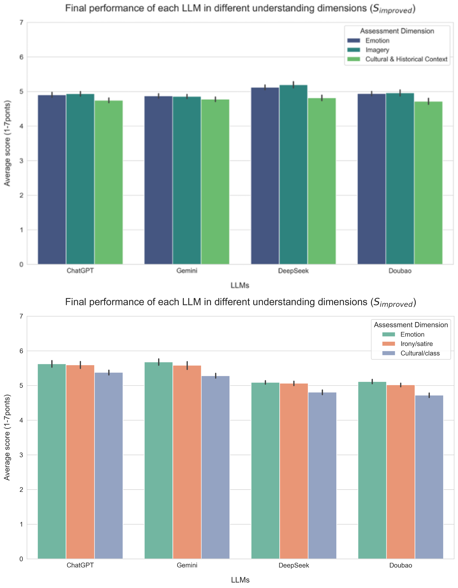
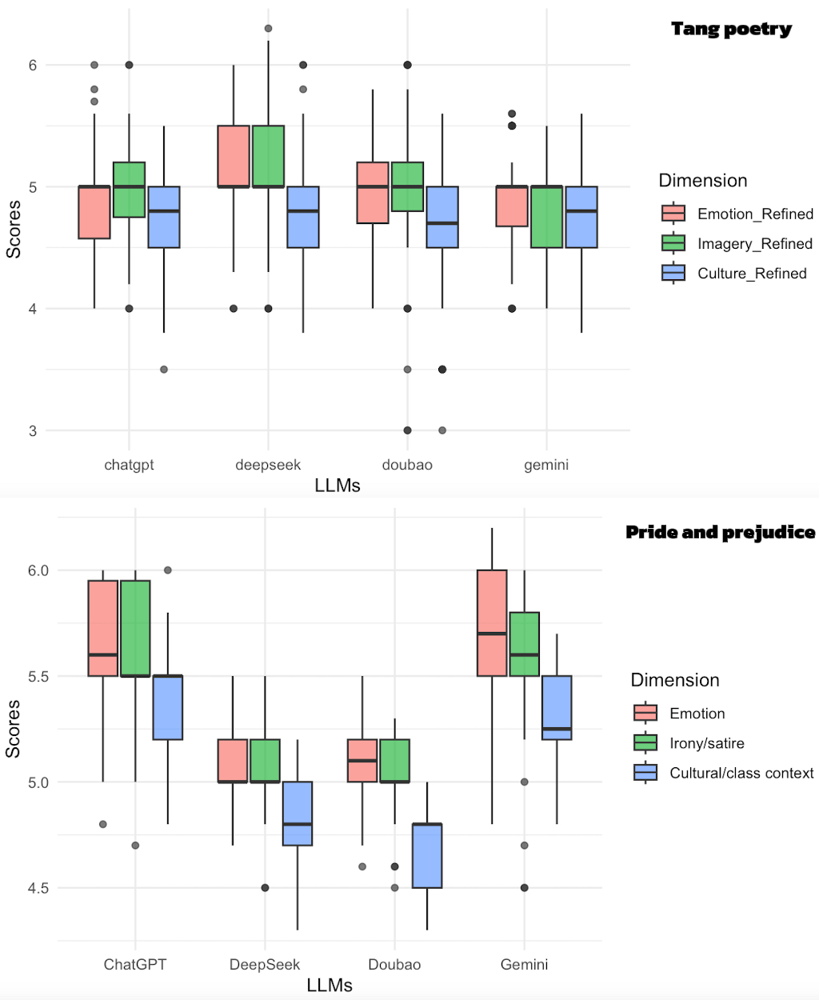
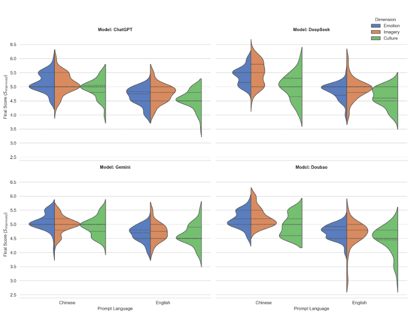

Abstract
This study evaluates the comprehension, learning potential, and cultural bias of large language models (LLMs) in complex literary texts. We propose a two-stage, human-expert-evaluated framework and introduce a "Learning Improvement Index (ΔI)" to quantify the model's cognitive calibration and self-enhancement. The results indicate that LLMs have systematic limitations in understanding cultural and historical contexts, with performance strongly influenced by cultural background alignment and prompt language. This framework provides a reproducible tool for assessing deep comprehension and offers empirical guidance for future model optimization.
Core Methodology
Stage 1: Baseline Performance Assessment
The model generates an initial interpretation of the literary text.
Human experts score the interpretation to get the baseline score S_baseline.
Stage 2: Improvement Performance Assessment
The model learns from an authoritative expert explanation.
The model produces a new, improved interpretation.
Experts score again to get the improved score S_improved.
Core Metric: Learning Improvement Index (ΔI)
ΔI = S_improved - S_baseline
This index quantifies the model's ability to learn from external knowledge and calibrate its own understanding.
Three Key Findings
Finding 1: The Cultural Ceiling Effect
All models scored significantly lower on the "Cultural & Historical Context" dimension. This reveals a systemic bottleneck in LLMs' ability for deep cultural reasoning.
Finding 2: The Cultural "Home-Field Advantage"
The model's cultural background is directly and quantifiably correlated with its performance. Chinese-background models performed better on Tang poetry, while Western-background models excelled on Pride and Prejudice.
Finding 3: The Decisive Impact of Prompt Language
In the Tang poetry test, using prompts in the original Chinese far outperformed using high-quality English translations. This proves that language is not just an instruction, but a critical medium for cultural signals.
Fig 4.8: Model Performance on Tang Poetry: Chinese vs. English Prompts
Interactive Demo
Experience the Model's Learning Process
Initial Interpretation S_baseline
Improved Interpretation S_improved
Quantitative Analysis of Learning Effect
Conclusion & Future Work
Research Conclusions
- Successfully proposed the ΔI index and a two-stage framework to effectively quantify the model's learning potential.
- Empirically revealed three major findings: the cultural ceiling, home-field advantage, and language effect.
- Provides a reproducible diagnostic tool for future model optimization and bias mitigation.
Future Work
- Transform the evaluation framework into a training paradigm to directly enhance model capabilities.
- Integrate explainability techniques to deeply explore the internal mechanisms of bias.
- Develop an automated evaluation agent to improve assessment efficiency.